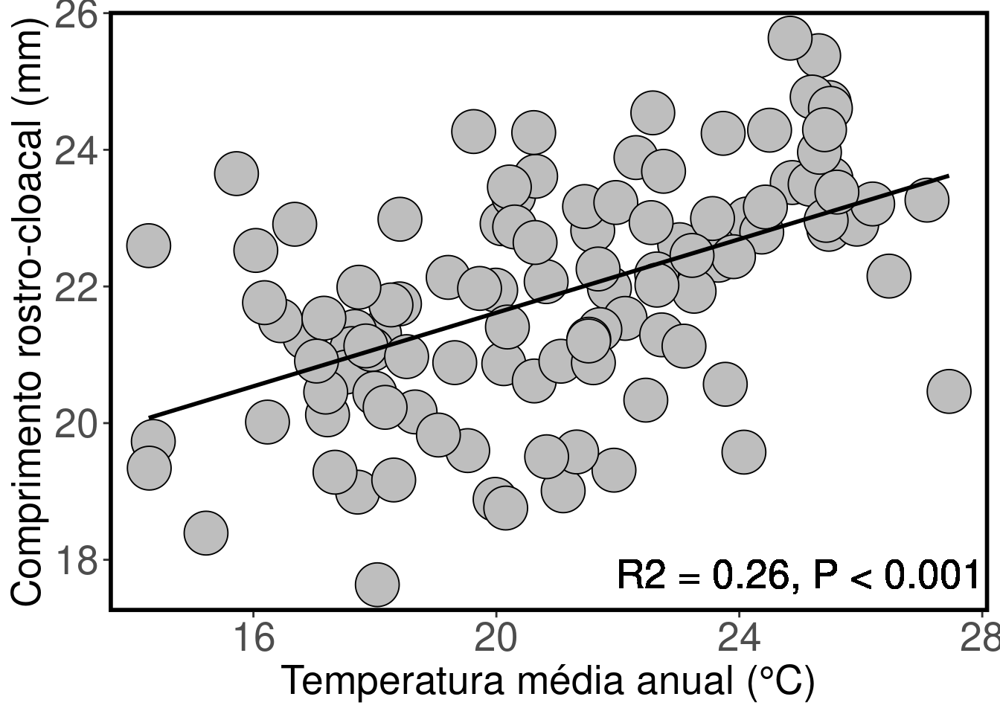

Capítulo 5 Regressão Simples
5.1 Backgorund da análise
A regressão simples é usada para analisar a relação entre uma variável preditora (plotada no eixo-X) e uma variável resposta (plotada no eixo-Y). As duas variáveis devem ser contínuas. Diferente das correlações, a regressão assume uma relação de causa e efeito entre as variáveis. O valor da variável preditora (X) causa, direta ou indiretamente, o valor da variável resposta (Y). Assim, Y é uma função linear de X:
\[ Y = \beta_0 + \beta_{1}X_i + \epsilon_i \]
Onde:
\(\beta_0\) = intercepto que representa o valor da função quando X = 0,
\(\beta_{1}\) = inclinação (slope) que mede a mudança na variável Y para cada mudança de unidade da variável X.
\(\epsilon_{1}\) = erro aleatório referente a variável Y que não pode ser explicado pela variável X.
5.1 Premissas da Regressão Simples:
- As amostras devem ser independentes;
- As unidades amostrais são selecionadas aleatoriamente;
- Distribuição normal (gaussiana) dos resíduos;
- Homogeneidade da variância.
5.1.0.1 Exemplo prático 1 - Regressão simples
5.1.0.1.1 Explicação dos dados
Neste exemplo, avaliaremos a relação entre o gradiente de temperatura média anual (°C) e o tamanho médio do comprimento rostro-cloacal (CRC em mm) de populações de Dendropsophus minutus (Anura:Hylidae) amostradas em 109 localidades no Brasil (Boaratti & da Silva 2015).
Pergunta:
Há relação entre o tamanho do CRC das populações e a temperatura das localidades onde os indivíduos ocorrem?
Predições
O CRC das populações serão menores em localidades mais quentes do que em localidades mais frias de acordo com a Hipótese do balanço de calor.
Variáveis
- Variáveis preditoras
- Dataframe com as populações (unidade amostral) nas linhas e CRC médio (mm) e temperatura média anual como colunas.
Checklist
- Verificar se o seu dataframe está com as unidades amostrais nas linhas e variáveis preditores nas colunas
5.1.1 Análise
Calculo da regressão simples
## IMPORTANDO DADOS
#********************
dados_regressao <- ecodados::regressoes
head(dados_regressao) # verificar se o dataframe foi lido corretamente## Municipio CRC Temperatura Precipitacao
## 1 Acorizal 22.98816 24.13000 1228.2
## 2 Alpinopolis 22.91788 20.09417 1487.6
## 3 Alto_Paraiso 21.97629 21.86167 1812.4
## 4 Americana 23.32453 20.28333 1266.2
## 5 Apiacas 22.83651 25.47333 2154.0
## 6 Arianopolis 20.86989 20.12167 1269.2# ANALISE DA REGRESSÃO
#************************
modelo_regressao <- lm(CRC ~ Temperatura, data = dados_regressao)
# PRIMEIRO VAMOS VERIFICAR A NORMALIDADE E HOMOGENEIDADE DAS VARIÂNCIAS
#***********************************************************************
# Os gráficos *Residuals vs Fitted*, *Scale-Location*, e *Residual vs Leverage* estão relacionados com a homogeneidade da variância. Nestes gráficos, esperamos ver os pontos dispersos no espaço sem padrões com formatos em *U* ou funil.
# O gráfico *Normal Q-Q* está relacionado com a distribuição normal dos resíduos. Neste gráfico, esperamos ver os pontos próximos a reta sem padrões com formatos em *U* ou *S*.
par(mfrow = c(2, 2), oma = c(0, 0, 2, 0))
plot(modelo_regressao)
## null device
## 1# VERIFICANDO OS RESULTADOS DA REGRESSÃO
#****************************************
anova(modelo_regressao)## Analysis of Variance Table
##
## Response: CRC
## Df Sum Sq Mean Sq F value Pr(>F)
## Temperatura 1 80.931 80.931 38.92 9.011e-09 ***
## Residuals 107 222.500 2.079
## ---
## Signif. codes: 0 '***' 0.001 '**' 0.01 '*' 0.05 '.' 0.1 ' ' 1# ou
# esta função apresenta os resultados mais detalhados com a estimativa do intercepto, inclinação da reta (slope) e o coeficiente de determinação (R2) que indica a proporção da variação na variável Y que pode ser atribuída à variação na variável X.
summary(modelo_regressao)##
## Call:
## lm(formula = CRC ~ Temperatura, data = dados_regressao)
##
## Residuals:
## Min 1Q Median 3Q Max
## -3.4535 -0.7784 0.0888 0.9168 3.1868
##
## Coefficients:
## Estimate Std. Error t value Pr(>|t|)
## (Intercept) 16.23467 0.91368 17.768 < 2e-16 ***
## Temperatura 0.26905 0.04313 6.239 9.01e-09 ***
## ---
## Signif. codes: 0 '***' 0.001 '**' 0.01 '*' 0.05 '.' 0.1 ' ' 1
##
## Residual standard error: 1.442 on 107 degrees of freedom
## Multiple R-squared: 0.2667, Adjusted R-squared: 0.2599
## F-statistic: 38.92 on 1 and 107 DF, p-value: 9.011e-09Visualizar os resultados em gráfico
library(ggplot2)
ggplot(data = dados_regressao, aes(x= Temperatura, y= CRC)) +
labs(x = "Temperatura média anual (°C)", y = "Comprimento rostro-cloacal (mm)", size = 20) +
geom_point(size = 15, shape = 21, fill = "gray") +
geom_text(x = 25, y = 17.8, label = "R2 = 0.26, P < 0.001", color = "black", size = 7) +
theme_bw() +
theme(axis.title.y = element_text(size = 20), axis.title.x = element_text(size = 20)) +
theme(axis.text.y = element_text(size = 20), axis.text.x = element_text(size = 20)) +
theme(panel.grid.major = element_blank(), panel.grid.minor = element_blank(),
panel.border = element_rect(colour = "black", fill=NA, size = 2)) +
geom_smooth(method = lm, se = FALSE, color = "black") 
Interpretação dos resultados
Neste exemplo, rejeitamos a hipótese nula que não existe relação entre o tamanho do CRC das populações de D. minutus e a temperatura da localidade onde elas ocorrem (F1,107 = 38,92, P < 0,001). Os resultados mostram que o tamanho do CRC das populações tem uma relação positiva com a temperatura das localidades. Assim, populações de D. minutus em localidades mais quentes apresentam maior CRC do que as populações em localidades mais frias.